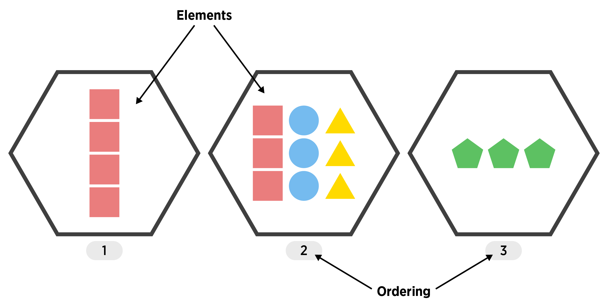

Base R Data Structures: Lists
Common Data Structures
A data scientist needs to deal with data! We need to have a firm foundation in the ways that we can store our data in R. This section goes through the most commonly used ‘built-in’ R objects that we’ll use.
There are five major data structures used in
R- Atomic Vector (1d)
- Matrix (2d)
- Array (nd)
- Data Frame (2d)
- List (1d)
| Dimension | Homogeneous (elements all the same) | Heterogeneous (elements may differ) |
|---|---|---|
| 1d | Atomic Vector | List |
| 2d | Matrix | Data Frame |
| nd | Array |
List
- A vector that can have differing elements! (still 1D)
An ordered set of objects (ordering starts at 1)
Useful for more complex types of data
Creating a List
Create with
list()The help gives:
list(...)
where ... is
objects, possibly named.
- We can essentially take any objects and store them as elements of our list!
my_df <- data.frame(number = 1:5, letter = c("a", "b", "c", "d", "e"))
my_list <- list(my_df, rnorm(4), c("!", "?"))
my_list[[1]]
number letter
1 1 a
2 2 b
3 3 c
4 4 d
5 5 e
[[2]]
[1] 0.64651696 1.38980391 -0.03679486 -0.11875254
[[3]]
[1] "!" "?"- Similar to creating a data frame, we can add names to the list elements upon creation
my_list <- list(my_data_frame = my_df, normVals = rnorm(4), punctuation = c("!", "?"))
my_list$my_data_frame
number letter
1 1 a
2 2 b
3 3 c
4 4 d
5 5 e
$normVals
[1] -0.8245689 -0.4857203 -0.2361937 1.1383224
$punctuation
[1] "!" "?"Common Attributes of Lists
The most common attribute for a list is similar to a data frame, the names.
str(my_list)List of 3
$ my_data_frame:'data.frame': 5 obs. of 2 variables:
..$ number: int [1:5] 1 2 3 4 5
..$ letter: chr [1:5] "a" "b" "c" "d" ...
$ normVals : num [1:4] -0.825 -0.486 -0.236 1.138
$ punctuation : chr [1:2] "!" "?"attributes(my_list)$names
[1] "my_data_frame" "normVals" "punctuation" - The names function gives us quick access to the names.
names(my_list)[1] "my_data_frame" "normVals" "punctuation" Accessing List Elements
There are many ways to access list elements!
- Use single square brackets
[ ]for multiple list elements to be returned
my_list$my_data_frame
number letter
1 1 a
2 2 b
3 3 c
4 4 d
5 5 e
$normVals
[1] -0.8245689 -0.4857203 -0.2361937 1.1383224
$punctuation
[1] "!" "?"my_list[2:3]$normVals
[1] -0.8245689 -0.4857203 -0.2361937 1.1383224
$punctuation
[1] "!" "?"- Use double square brackets
[[ ]](or[ ]) for a single list element
my_list[1]$my_data_frame
number letter
1 1 a
2 2 b
3 3 c
4 4 d
5 5 emy_list[[1]] number letter
1 1 a
2 2 b
3 3 c
4 4 d
5 5 eNotice the difference in how these are returned!
[]returns a list with a named element (my_data_frame)[[]]returns just the element itself (the data frame)
str(my_list[1])List of 1
$ my_data_frame:'data.frame': 5 obs. of 2 variables:
..$ number: int [1:5] 1 2 3 4 5
..$ letter: chr [1:5] "a" "b" "c" "d" ...str(my_list[[1]])'data.frame': 5 obs. of 2 variables:
$ number: int 1 2 3 4 5
$ letter: chr "a" "b" "c" "d" ...- We can do multiple subsets on a single line!
my_list[[2]][1] -0.8245689 -0.4857203 -0.2361937 1.1383224my_list[[2]][3:4][1] -0.2361937 1.1383224- If we have named list elements, we can use
$just like with data frames!
str(my_list)List of 3
$ my_data_frame:'data.frame': 5 obs. of 2 variables:
..$ number: int [1:5] 1 2 3 4 5
..$ letter: chr [1:5] "a" "b" "c" "d" ...
$ normVals : num [1:4] -0.825 -0.486 -0.236 1.138
$ punctuation : chr [1:2] "!" "?"my_list$normVals[1] -0.8245689 -0.4857203 -0.2361937 1.1383224- Note that the
attributes()function actually returns a list!
attributes(my_list)$names
[1] "my_data_frame" "normVals" "punctuation" str(attributes(my_list))List of 1
$ names: chr [1:3] "my_data_frame" "normVals" "punctuation"- That means we can access the named list element
namesvia the$operator.
attributes(my_list)$names[1] "my_data_frame" "normVals" "punctuation" Lists & Data Frames
Big Connection: A Data Frame is a list of equal length vectors!
This can be seen in the similar nature of the structure of these two objects.
str(my_list)List of 3
$ my_data_frame:'data.frame': 5 obs. of 2 variables:
..$ number: int [1:5] 1 2 3 4 5
..$ letter: chr [1:5] "a" "b" "c" "d" ...
$ normVals : num [1:4] -0.825 -0.486 -0.236 1.138
$ punctuation : chr [1:2] "!" "?"is.list(my_list)[1] TRUEstr(iris)'data.frame': 150 obs. of 5 variables:
$ Sepal.Length: num 5.1 4.9 4.7 4.6 5 5.4 4.6 5 4.4 4.9 ...
$ Sepal.Width : num 3.5 3 3.2 3.1 3.6 3.9 3.4 3.4 2.9 3.1 ...
$ Petal.Length: num 1.4 1.4 1.3 1.5 1.4 1.7 1.4 1.5 1.4 1.5 ...
$ Petal.Width : num 0.2 0.2 0.2 0.2 0.2 0.4 0.3 0.2 0.2 0.1 ...
$ Species : Factor w/ 3 levels "setosa","versicolor",..: 1 1 1 1 1 1 1 1 1 1 ...is.list(iris)[1] TRUE- That means we can access parts of a data frame in the same way we did with a list. To get the 2nd column (list element) of
iriswe can do:
head(iris[2]) Sepal.Width
1 3.5
2 3.0
3 3.2
4 3.1
5 3.6
6 3.9head(iris[[2]])[1] 3.5 3.0 3.2 3.1 3.6 3.9Notice again the change in simplification between the two methods for accessing list elements. Think of
[]as preserving and[[]]as simplifying!We can also look at the
typeof()each of these objects
typeof(my_list)[1] "list"typeof(iris)[1] "list"Quick R example
Please pop this video out and watch it in the full panopto player!
Recap!
List (1D group of objects with ordering)
A vector that can have differing elements
Create with
list()More flexible than a Data Frame!
Useful for more complex types of data
Access with
[ ],[[ ]], or$
Big Recap!
We now know how we’ll handle data using R. We will end up using vectors, lists, and data frames a lot (although we’ll use a special form of a data frame called a tibble).
| Dimension | Homogeneous | Heterogeneous |
|---|---|---|
| 1d | Atomic Vector | List |
| 2d | Matrix | Data Frame |
| nd | Array |
Common Attributes exist
dimnamesfor matricesnamesfor vectors, data frames, and lists- Note:
colnames()is a function that generically tries to get at the names, whether you have a matrix or data frame (rownames()exists as well!)
Basic access via
- Atomic vectors -
x[ ] - Matrices -
x[ , ] - Data Frames -
x[ , ]orx$name - Lists -
x[ ],x[[ ]], orx$name
Use the table of contents on the left or the arrows at the bottom of this page to navigate to the next learning material!